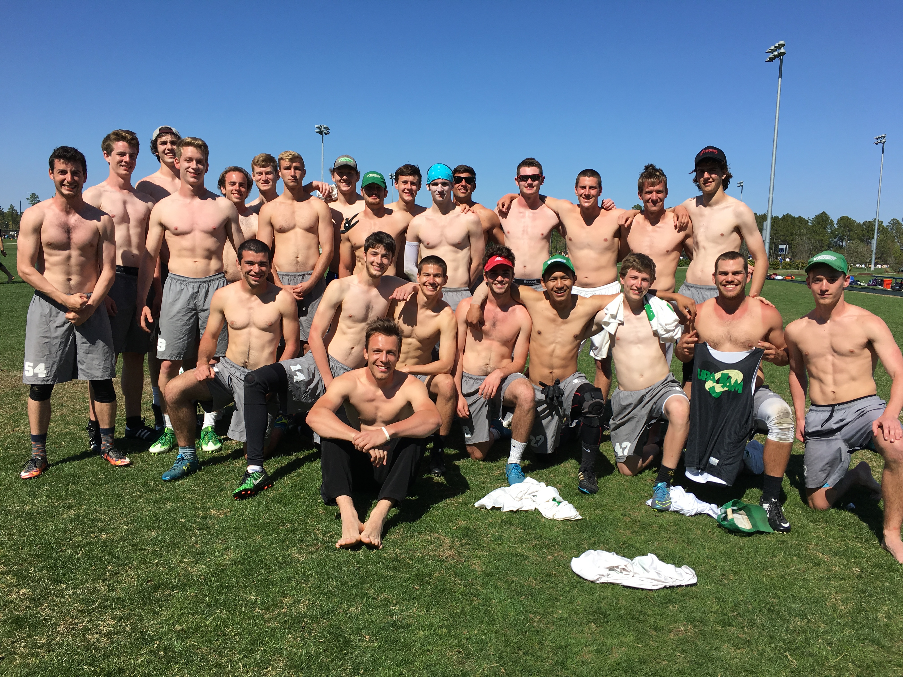
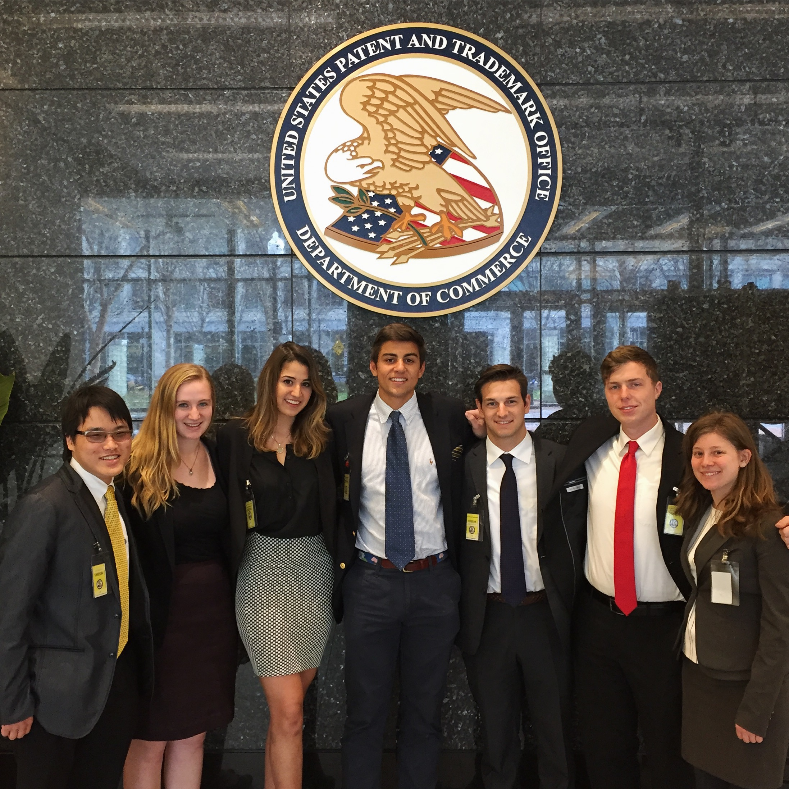
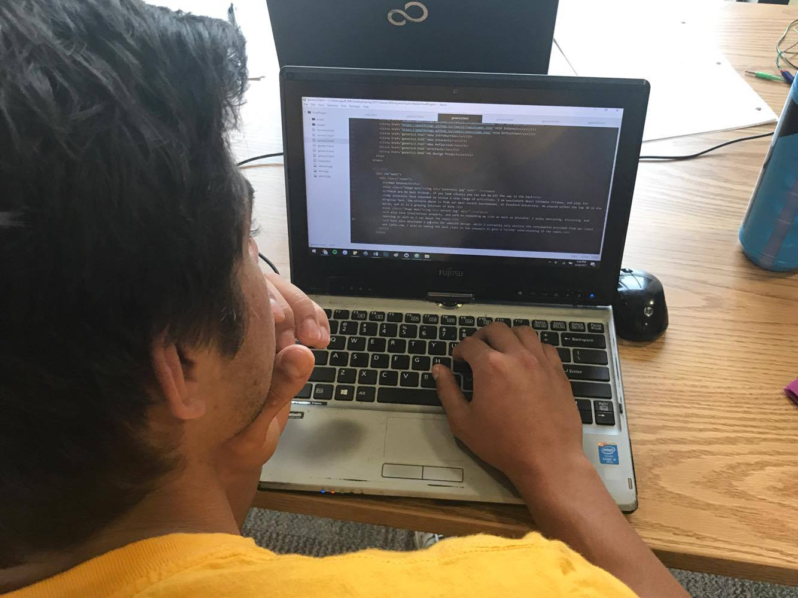

New Interests
These are my best friends, if you look closely you can see me all the way in the back!
My interests have expanded to inclue a wide range of activities. I am passionate about Ultimate Frisbee, and play for Virginia Tech. The picture above is from our most recent tournamenet, at Stanford University. We placed within the top 10 in the world, and it is a growing interest of mine.
I also love intellectual property, and work on expanding my club as much as possible. I enjoy educating, discusing, and learning as much as I can about the topic.
I have also developed a passion for website design. While I currently only utilize the information provided from our class and Lydia.com, I plan on taking the next class in the sequence to gain a further understanding of the topic.